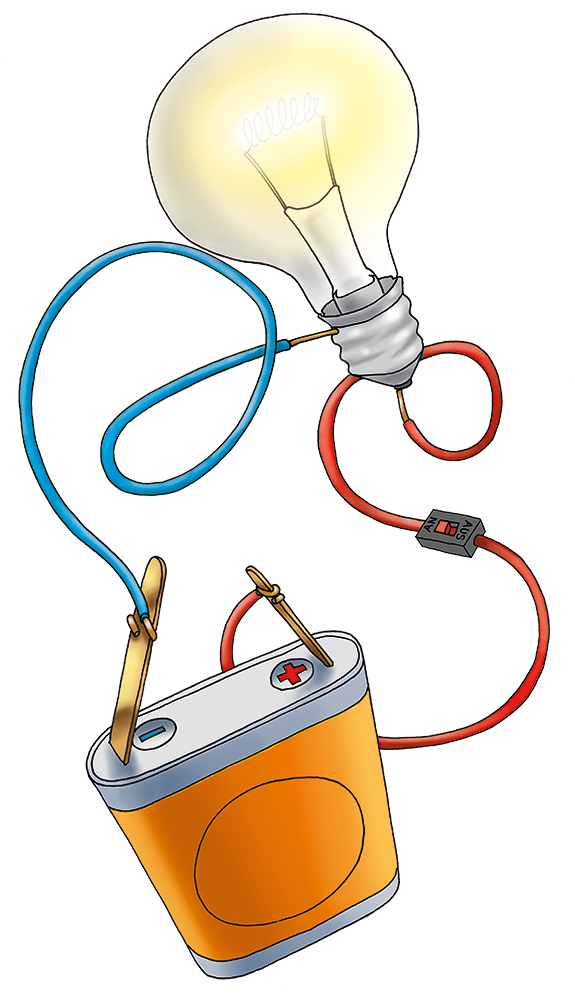
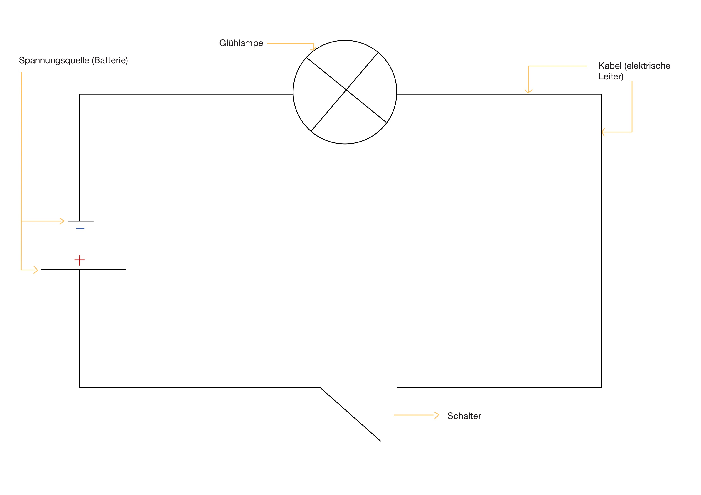
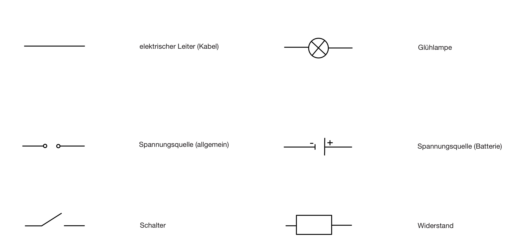

Elektrizitätslehre
Was wird benötigt, um eine Glühlampe zum Leuchten zu bringen?

Um den erzeugten Strom auch nutzen zu können um z.B. eine Glühlampe zum Leuchten zu bringen, müssen wir folgendes beachten: Wir brauchen weiterhin unsere Spannungsquelle mit einem positiven und negativen Pol. An diese wird nun eine Glühlampe angeschlossen. Dabei nutzen wir Kabel, die elektrischen Strom leiten können und schließen die Glühlampe damit in den Stromkreis an.
Damit wir besser kontrollieren können, wie lange diese Glühlampe leuchtet, bauen wir zusätzlich einen Schalter ein. Dieser kann den Stromkreis öffnen und schließen.
Zuletzt ist es noch wichtig, eine Sicherung einzubauen, damit das Material bei zu hohem Stromfluss nicht kaputt geht.

Damit der Stromkreis übersichtlich darstellbar ist, nutzen wir für die eben genannten Bauteil bestimmte Symbole:
